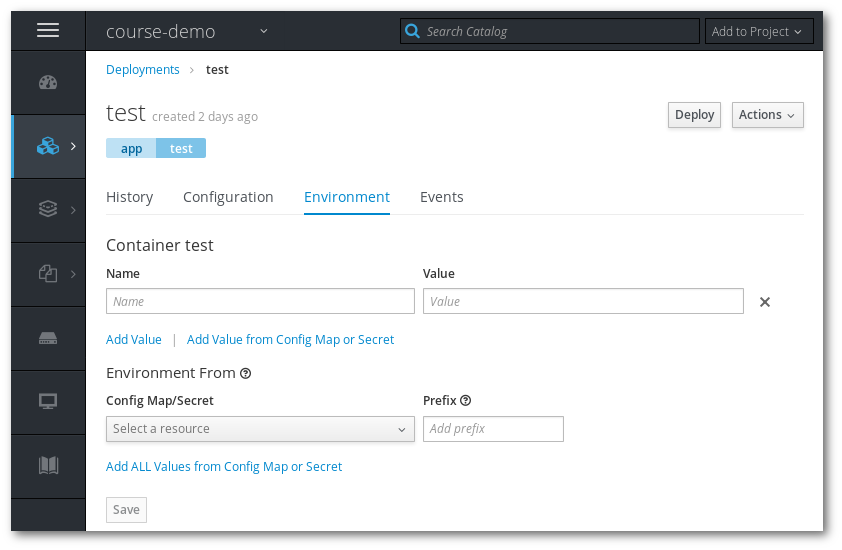
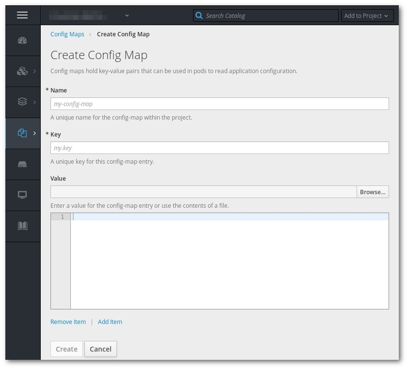

Pre-requisites, the application created in Exercise 2
In this exercise we will add configuration to the application.
One simple way of configuring application is using environment variables.

In this section, we will use a config map to create a config file.
config.json:
{
"student": "??????",
"debug": true
}
Replace the question marks with your name.

From the deployment configuration page, use the "Add Config Files" option. Mount the config map you just created and mount it in /etc/flask.
Check your application